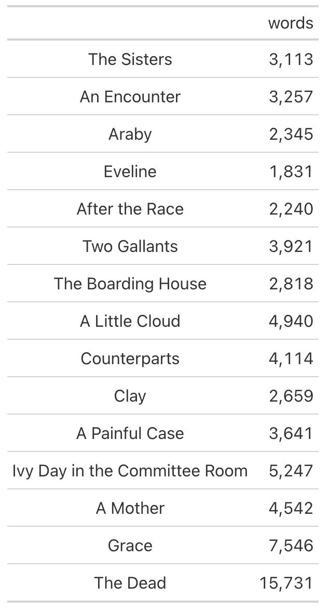
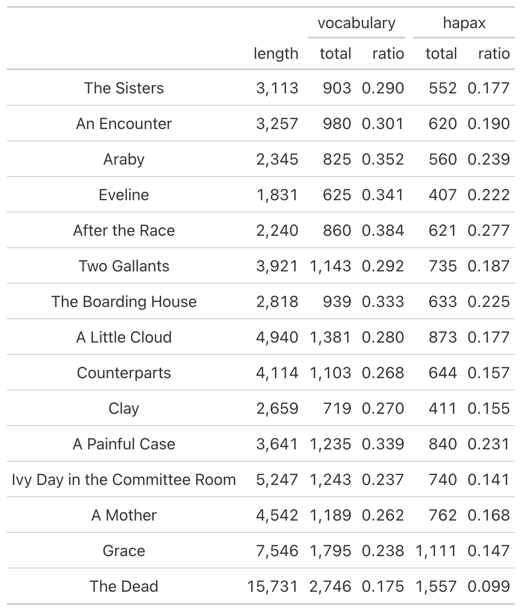
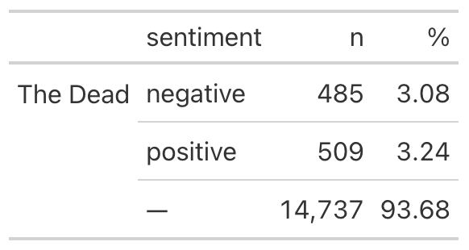

tabulize() provides a simple method for sharing results. Based on previous functions used, tabulize() will choose a method, resolving to one of a set of tables.
Arguments
- .data
data processed with one or more functions from
tmtyro- ...
Arguments passed on to
tabulize.defaultsummaryIndicates whether to prepare a summary table or the rows as they exist
inorderIndicates whether labels in the
doc_idcolumn should have their order preservedcountDetermines whether frequencies will be counted for individual features
rowsChooses rows to be shown
Examples
dubliners <- get_gutenberg_corpus(2814) |>
load_texts() |>
identify_by(part) |>
standardize_titles()
# A data frame with `doc_id` and `word` columns will show word counts by default
dubliners |>
tabulize()
# Applying tmtyro functions will prepare other tables
dubliners |>
add_vocabulary() |>
tabulize()
dubliners |>
dplyr::filter(doc_id == "The Dead") |>
add_sentiment() |>
tabulize()
See also
Other table helpers:
collapse_rows()